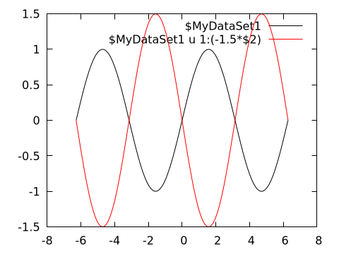
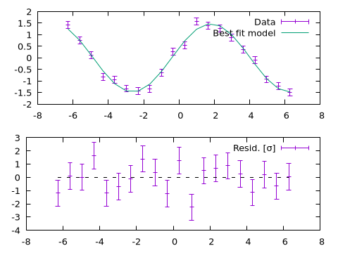
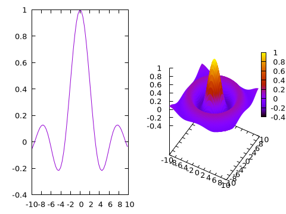
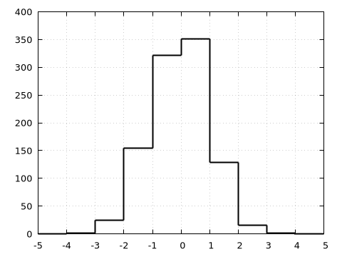
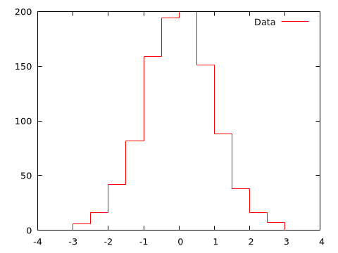
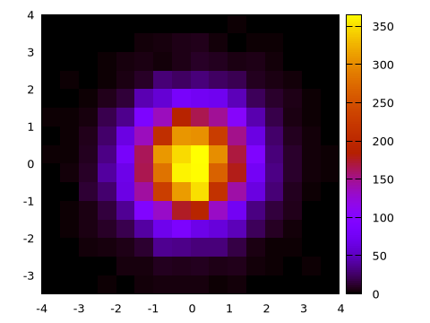
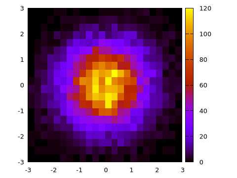
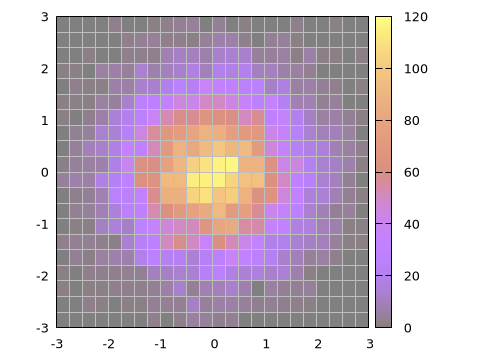
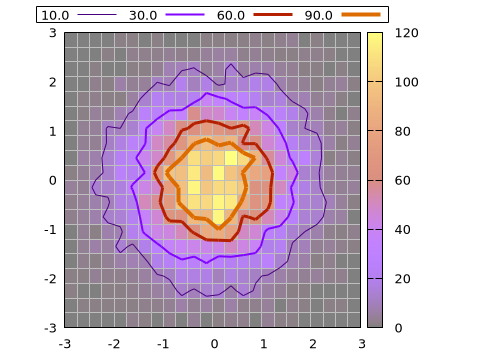
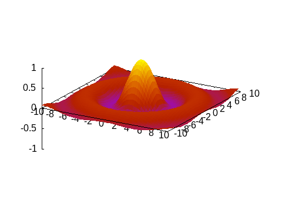

Advanced usage
Here we will show a few advanced techniques for data visualization using Gnuplot.jl.
Named datasets
A dataset may have an associated name whose purpose is to use it multiple times for plotting, while sending it only once to gnuplot. A dataset name must begin with a $.
A named dataset is defined as a Pair{String, Tuple}, e.g.:
"\$name" => (1:10,)and can be used as an argument to both @gp and gsp, e.g.:
x = range(-2pi, stop=2pi, length=100);
y = sin.(x)
name = "\$MyDataSet1"
@gp name=>(x, y) "plot $name w l lc rgb 'black'" "pl $name u 1:(1.5*\$2) w l lc rgb 'red'"
Both curves use the same input data, but the red curve has the second column (\$2, corresponding to the y value) multiplied by a factor 1.5.
A named dataset comes in hand also when using gnuplot to fit experimental data to a model, e.g.:
# Generate data and some noise to simulate measurements
x = range(-2pi, stop=2pi, length=20);
y = 1.5 * sin.(0.3 .+ 0.7x);
err = 0.1 * maximum(abs.(y)) .* fill(1, size(x));
y += err .* randn(length(x));
name = "\$MyDataSet1"
@gp "f(x) = a * sin(b + c*x)" :- # define an analytical model
@gp :- "a=1" "b=1" "c=1" :- # set parameter initial values
@gp :- name=>(x, y, err) :- # define a named dataset
@gp :- "fit f(x) $name via a, b, c;" # fit the dataThe parameter best fit values can be retrieved as follows:
@info("Best fit values:",
a = gpexec("print a"),
b = gpexec("print b"),
c = gpexec("print c"))┌ Info: Best fit values:
│ a = "1.51303854468398"
│ b = "0.360996772821728"
└ c = "0.700373449674559"A named dataset is available until the session is reset, i.e. as long as :- is used as first argument to @gp.
Multiplot
Gnuplot.jl can draw multiple plots in the same figure by exploiting the multiplot command. Each plot is identified by a positive integer number, which can be used as argument to @gp to redirect commands to the appropriate plot.
Continuing previous example we can plot both data and best fit model (in plot 1) and residuals (in plot 2):
@gp :- "set multiplot layout 2,1"
@gp :- 1 "p $name w errorbars t 'Data'"
@gp :- "p $name u 1:(f(\$1)) w l t 'Best fit model'"
@gp :- 2 "p $name u 1:((f(\$1)-\$2) / \$3):(1) w errorbars t 'Resid. [{/Symbol s}]'"
@gp :- [extrema(x)...] [0,0] "w l notit dt 2 lc rgb 'black'" # reference line
Note that the order of the plots is not relevant, i.e. we would get the same results with:
@gp :- "set multiplot layout 2,1"
@gp :- 2 "p $name u 1:((f(\$1)-\$2) / \$3):(1) w errorbars t 'Resid. [{/Symbol s}]'"
@gp :- [extrema(x)...] [0,0] "w l notit dt 2 lc rgb 'black'" # reference line
@gp :- 1 "p $name w errorbars t 'Data'"
@gp :- "p $name u 1:(f(\$1)) w l t 'Best fit model'"Mixing 2D and 3D plots
A multiplot can also mix 2D and 3D plots:
x = y = -10:0.33:10
@gp "set multiplot layout 1,2"
# 2D
@gp :- 1 x sin.(x) ./ x "w l notit"
# 3D
sinc2d(x,y) = sin.(sqrt.(x.^2 + y.^2))./sqrt.(x.^2+y.^2)
fxy = [sinc2d(x,y) for x in x, y in y]
@gsp :- 2 x y fxy "w pm3d notit"
Multiple sessions
Gnuplot.jl can handle multiple sessions, i.e. multiple gnuplot processes running simultaneously. Each session is identified by an ID (sid::Symbol, in the documentation).
In order to redirect commands to a specific session simply insert a symbol into your @gp or @gsp call, e.g.:
@gp :GP1 "plot sin(x)" # opens first window
@gp :GP2 "plot sin(x)" # opens secondo window
@gp :- :GP1 "plot cos(x)" # add a plot on first windowThe session ID can appear in every position in the argument list, but only one ID can be present in each call. If the session ID is not specified the :default session is considered.
The names of all current sessions can be retrieved with session_names():
julia> println(session_names())
Symbol[:default, :GP1, :GP2]To quit a specific session use Gnuplot.quit():
julia> Gnuplot.quit(:GP1)
0The output value is the exit status of the underlying gnuplot process.
You may also quit all active sessions at once with Gnuplot.quitall():
julia> Gnuplot.quitall()Histograms
Gnuplot.jl provides facilities to compute and display histograms, through the hist() function. E.g., to quickly preview an histogram:
x = randn(1000);
@gp hist(x)
A finer control on the output is achieved by setting the range to consider (range= keyword) and either the bin size (bs=) or the total number of bins (nbins=) in the histogram. See hist() documentation for further information.
Moreover, the hist() return a Gnuplot.Histogram1D structure, whose content can be exploited to customize histogram appearence, e.g.:
x = randn(1000);
h = hist(x, range=3 .* [-1,1], bs=0.5)
@gp h.bins h.counts "w histep t 'Data' lc rgb 'red'"
Gnuplot.jl also allows to compute 2D histograms by passing two vectors (with the same lengths) to hist(). A quick preview is simply obtained by:
x = randn(10_000)
y = randn(10_000)
@gp "set size ratio -1" hist(x, y)
Again, a finer control can be achieved by specifying ranges, bin size or number of bins (along both dimensions) and by explicitly using the content of the returned Gnuplot.Histogram2D structure:
h = hist(x, y, bs1=0.25, nbins2=20, range1=[-3,3], range2=[-3,3])
@gp "set size ratio -1" h.bins1 h.bins2 h.counts "w image notit"
Alternatively, 2D histograms may be displayed using the boxxyerror plot style which allows more flexibility in, e.g., handling transparencies and drawing the histogram grid. In this case the data can be prepared using the boxxyerror() function, as follows:
box = boxxyerror(h.bins1, h.bins2, cartesian=true)
@gp "set size ratio -1" "set style fill solid 0.5 border lc rgb 'gray'" :-
@gp :- box... h.counts "w boxxyerror notit lc pal"
Contour lines
Although gnuplot already handles contours by itself (with the set contour command), Gnuplot.jl provides a way to calculate contour lines paths before displaying them, using the contourlines() function. We may use it for, e.g., plot contour lines with customized widths and palette, according to their z level. Continuing previous example:
clines = contourlines(h.bins1, h.bins2, h.counts, cntrparam="levels discrete 10, 30, 60, 90");
for i in 1:length(clines)
@gp :- clines[i].data "w l t '$(clines[i].z)' lw $i lc pal" :-
end
@gp :- key="outside top center box horizontal"
Animations
The Multiplot capabilities can also be used to stack plots one above the other in order to create an animation, as in the following example:
x = y = -10:0.33:10
fz(x,y) = sin.(sqrt.(x.^2 + y.^2))./sqrt.(x.^2+y.^2)
fxy = [fz(x,y) for x in x, y in y]
@gsp "set xyplane at 0" "unset colorbox" cb=[-1,1] zr=[-1,1]
frame = 0
for direction in [-1,1]
for factor in -1:0.1:1
global frame += 1
@gsp :- frame x y direction * factor .* fxy "w pm3d notit" :-
end
end
@gspHere the frame variable is used as multiplot index. The animation can be saved in a GIF file with:
save(term="gif animate size 480,360 delay 5", output="assets/animation.gif")
Direct command execution
When gnuplot commands are passed to @gp or @gsp they are stored in a session for future use, or to be saved in Gnuplot scripts. If you simply wish to execute a command, without storing it in the session, use gpexec. E.g. if you wish to temporarily change the current terminal:
julia> gpexec("set term wxt");The gnuplot process replies are returned as a string, e.g.:
julia> gpexec("print GPVAL_TERM")
"wxt"You may also provide a session ID as first argument (see Multiple sessions, to redirect the command to a specific session.
Dry sessions
A "dry session" is a session with no underlying gnuplot process. To enable dry sessions type:
julia> Gnuplot.options.dry = true;before starting a session (see also Options). Note that the dry option is a global one, i.e. it affects all sessions started after setting the option.
Clearly, no plot can be generated in dry sessions. Still, they are useful to run Gnuplot.jl code without raising errors (no attempt will be made to communicate with the underlying process). Moreover, Gnuplot scripts can also be generated in a dry session, without the additional overhead of sending data to the gnuplot process.
If a gnuplot process can not be started the package will print a warning, and automatically enable dry sessions.
Options
Thepackage options are stored in a global structure available in Julia as Gnuplot.option (the type of the structure is Gnuplot.Options). The most important settings are as follows:
dry::Bool: if true all new sessions will be started Dry sessions. Default isfalse, but if the package is not able to start a gnuplot it will automatically switch tofalse;init::Vector{String}: This vector can be used topush!initialization commands to be executed when a new session is started. Default is an empty vector. It can be used to, e.g., set a custom terminal for all new sessions:
julia> push!(Gnuplot.options.init, "set term sixelgd");Note that this is a global option, i.e. it will affect all new sessions. Also note that the commands in Gnuplot.options.init are not saved in Gnuplot scripts;
verbose::Bool: a flag to set verbosity of the package. In particular if it istrueall communication with the underlying process will be printed on stdout. E.g.:
julia> Gnuplot.options.verbose = true;
julia> x = 1.:10;
julia> @gp x x.^2 "w l t 'Parabola'"
GNUPLOT (default) reset session
GNUPLOT (default) $data1 << EOD
GNUPLOT (default) 1.0 1.0
GNUPLOT (default) 2.0 4.0
GNUPLOT (default) 3.0 9.0
GNUPLOT (default) 4.0 16.0
GNUPLOT (default) ...
GNUPLOT (default) EOD
GNUPLOT (default) reset
GNUPLOT (default) plot \
$data1 w l t 'Parabola'
julia> save(term="pngcairo size 480,360 fontscale 0.8", output="output.png")
GNUPLOT (default) reset
GNUPLOT (default) print GPVAL_TERM
GNUPLOT (default) -> wxt
GNUPLOT (default) print GPVAL_TERMOPTIONS
GNUPLOT (default) -> 0 enhanced
GNUPLOT (default) set term pngcairo size 480,360 fontscale 0.8
GNUPLOT (default) set output 'output.png'
GNUPLOT (default) plot \
$data1 w l t 'Parabola'
GNUPLOT (default) set output
GNUPLOT (default) set term wxt 0 enhancedEach line reports the package name (GNUPLOT), the session name (default), the command or string being sent to gnuplot process, and the returned response (line starting with ->). Default value is false;
cmd::String: command to start the gnuplot process, default value is"gnuplot". If you need to specify a custom path to the gnuplot executable you may change this value;default::Symbol: default session name, i.e. the session that will be used when no session name is provided;preferred_format::Symbol: preferred format to send data to gnuplot. Value must be one of:bin: provides best performances for large datasets, but uses temporary files;text: may be slow for large datasets, but no temporary file is involved;auto(default) automatically choose the best strategy.